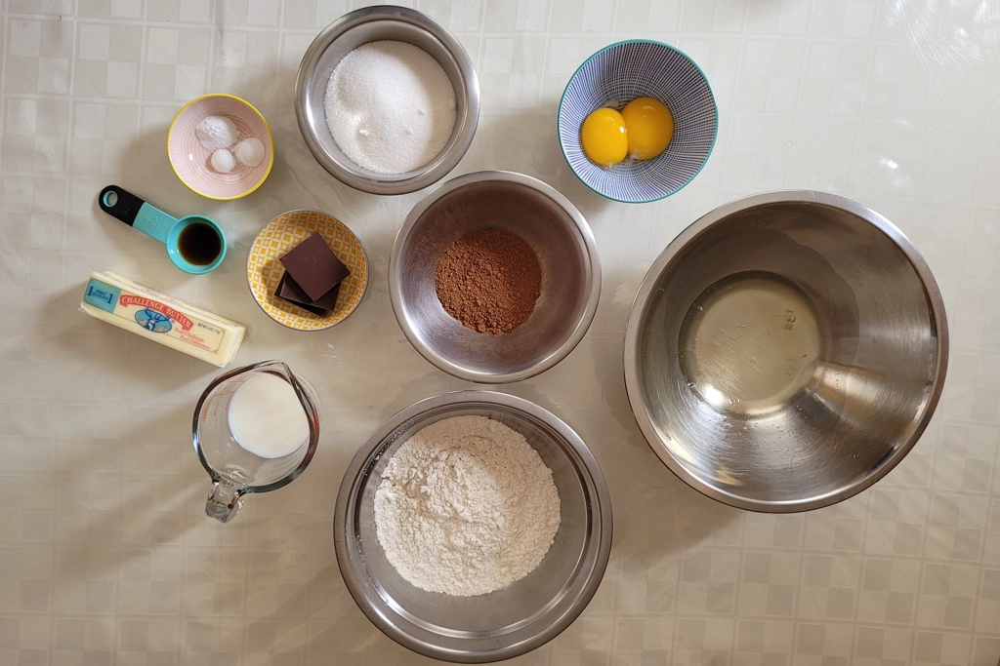
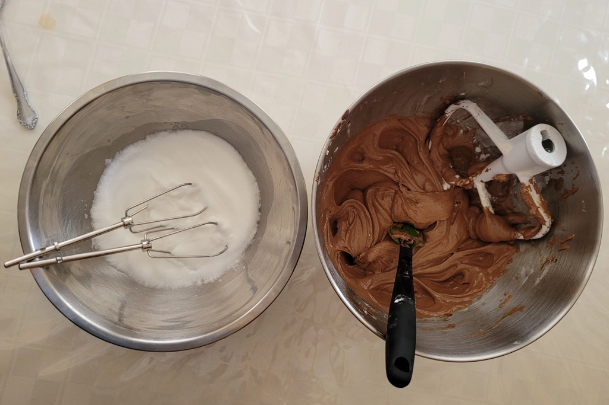
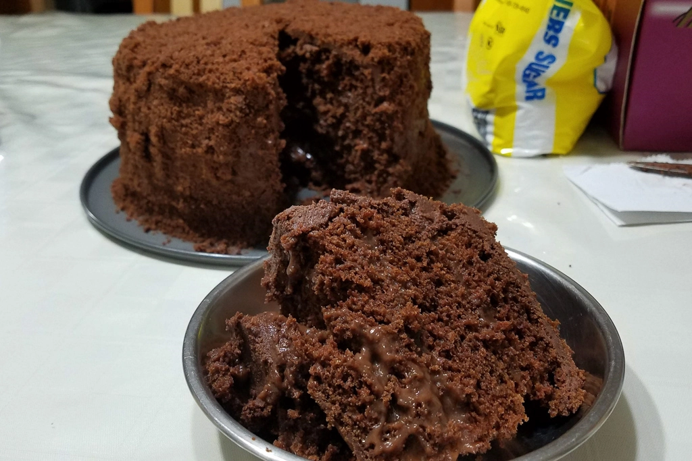

Brooklyn Blackout Cake
Aug 22 - Written by Emily

Who doesn’t love a classic cake that’s full of chocolatey goodness and layers of soft fluffy sponge?!
Chocolate cake is one of those things I’ll occasionally crave as most of them can often be too sweet. However, after trying the Brooklyn Blackout Cake from Little Cupcake Bakeshop in NYC, I refuse to eat or make any other chocolate cake. If you’re unfamiliar with what a Brooklyn Blackout cake is, it is a chocolate cake layered with chocolate pudding and covered with chocolate frosting and cake crumbs. It is delicious and just the right amount of sweetness since the middle layers consist of pudding rather than frosting.
The recipe I followed came from NY Times cooking and is supposedly their take on the infamous Ebinger family’s blackout cake recipe. It is a very simple recipe to follow but because there are several components to make, it is a time consuming process. But, if you can make it through, the results are worth it!
Unlike your usual cake recipes, this one follows a slightly different method but it is still very straightforward and easy to follow. One thing I have noticed with this cake is that it came out a little on the dryer side but once it was all assembled, the cake layers soaked up some of the moisture from the pudding and rehydrated itself creating a nice, fluffy, moist cake. So, dont worry too much about your cake not being perfect!
While the cake is baking, you can make your chocolate pudding. If you have never made pudding before, don’t fear, it's simpler than you think. What’s great about this recipe is that you’ll likely have some extra pudding left which makes for an extra yummy treat! The key to this step is stirring constantly until your mixture thickens to ensure everything is evenly distributed and smooth.
Now that you have your cake and your pudding made, there's only one thing left to make, the frosting. I found this to be the most challenging part, possibly because I didn't have any corn syrup and just made do without. Up until the recipe tells you to whisk in the hot water, everything was going really well. After I added the hot water, my mixture started to seize and in an attempt to save it, I added in some confectioners sugar. Since things weren’t going well anyways, it couldn’t get any worse, right? So as I improvised and added more sugar and water to get to a frosting-like consistency, I ended up with a frosting that was overly sweet but looked and tasted about right.
And since I have already made it this far, I wasn’t able to back down now and give up so I took my cake layers, cut them each in half and began to assemble. Since there is pudding in between the layers of cake instead of frosting, it made for a very jiggly and semi unstable cake to frost. But with my lack of patience, I chose to frost it anyways leading to the need to use more frosting than necessary and a very messy frosting job. But, since the cake is typically covered in cake crumbs, it was okay because at that point, no one would notice how messy it is.
So after hours of work put into making this one not so little chocolate cake, it was complete! I would recommend refrigerating your cake for at least a few hours before serving to allow everything to set and firm up a bit but since it was late and I’d already spent so much time on it, I couldn’t wait any longer to try it out. Is it as good as the one I had in nyc? No but I’d say it is the best chocolate cake I have ever made. The only thing I would change is the frosting because that was overly sweet but all in all, it was a solid attempt at a Brooklyn Blackout Cake and will definitely be something I try making again.